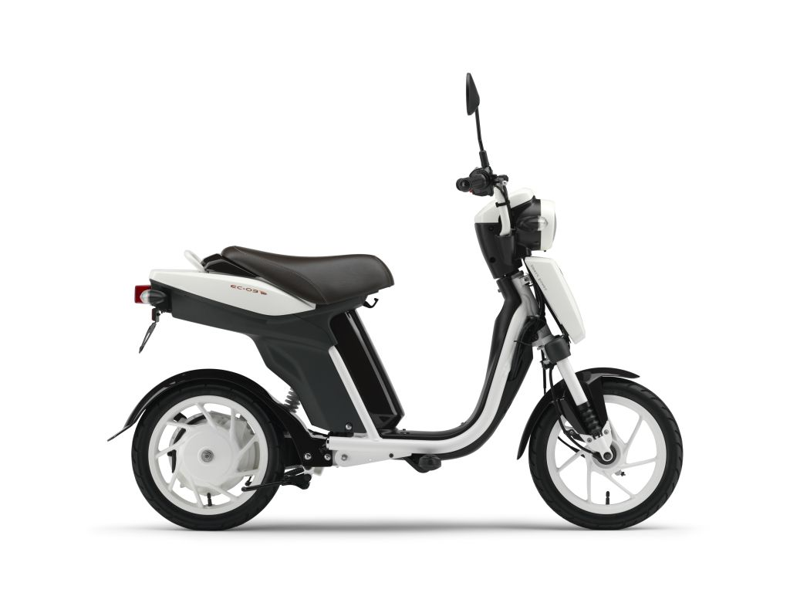

NIU - Pasaulyje pirmaujantis išmanus elektrinis motoroleris
- Benzininiai motoroleriai - Heradas
Mūsų svetainėje naudojami slapukai. Jei sutinkate su slapukų naudojimu spauskite mygtuką „Sutinku“ arba naršykite toliau. Savo duotą sutikimą bet kada galėsite atšaukti pakeisdami savo interneto naršyklės nustatymus ir ištrindami įrašytus slapukus. - Puodelis „Motoroleris“ | Puodeliai vaikams ir suaugusiems ...
Motoroleriai, keturračiai, apsauginiai šalmai ir pirštinės – internetinėje parduotuvėje senukai.lt. Platus kokybiškų transporto priemonių asortimentas. - Benzininiai motoroleriai ir keturračiai | Senukai.lt
O motoroleris, kurio ,didžiausiasis konstrukcinis greitis didesnis kaip 45 km/h ir (arba) kurio variklio darbinis cilindro tūris didesnis kaip 50 cm3 yra priskiriamas prie motociklų kategorijos. KETbilietai.lt. 2011/08/12 at 14:44. Atsakyti. - Elektriniai Motoroleriai Su Galingu Elektros Varikliu ...
elektrinis motoroleris iš Otto.lt. Kokybiškos prekės ir profesionalus aptarnavimas. Pasirinkimas iš daugiau nei 500.000 prekių! - NIU - Pasaulyje pirmaujantis išmanus elektrinis motoroleris
EkoRide SL elektrinis motoroleris turi: Priekinius ir galinius amortizatorius- kas užtikrins patogią ir minkštą kelionę Nuotolinio atrakinimo pultelį ir signalizaciją Spidometrą Telefono laikiklį su įkrovimo jungtimi Ga lingą priekinį bei galinį žibintus- kad visada būtumėte matomi Naujos kartos elektrinį variklį, kuris taupo energiją - elektrinis motoroleris | OTTO
Ieškote įdomios ir nedidelės dovanos? Įsigykite šį išskirtinį puodelį „Motoroleris“ ir nudžiuginkite gavėjus. Užsisakykite Breto parduotuvėje. - Elektriniai motoroleriai - Heradas
MOTOROLERIS KEEWAY RKR 125 Techninės savybės Darbinis tūris 125 cc / 4T. Var... Teirautis telefonu. 2,590.00 € 2,290.00€ Be mokesčių: 1,892.56€ ... - Vilniuje susidūrė lengvasis automobilis ir motoroleris ...
Elektrinis motoroleris skuteris CITYCOCO 3950WAT . Gali būti registruojamas važinėjimui gatvėmis. ES8008 - Kaip gauti motorolerio motociklo keturačio vairuotojo ...
Motoroleris / Mopedas Zipp Quantum 2012 m Autogidas.lt klientų aptarnavimo skyrius: Jei iškilo klausimų, rašykite čia Darbo laikas: I-V 09:00-11:30, 12:30-17:00 - MOTOROLERIAI
Elektriniai paspirtukai Mažu ir negalingu elektriniu paspirtuku, kurio projektinis greitis neviršija 25 kilometrų per valandą ir kurio galia yra ne didesnė nei 1 kW (turi būti išpildytos abi šios sąlygos), kaip ir dviračiais, galima važiuoti dviračių takais ir dviračių juostomis ir jiems teisių nereikia.

niu Elektrinis motoroleris Rasti parduotuvę NIU dalinimosi programa Medijos centras Apie Važiavimo testas Mūsų istorija Investuotojai Kontaktai Global Global 中国 Europe България Česko Deutschland Eesti España Ελλάδα France Hrvatska Italia Latvija Lietuva Nederland Polska Slovenija Srbija Norge The Americas Chile Colombia México United States Asia Vietnam Turkey
Success!
Thank You For Subscribing!
Go Back Apžvalga Dizainas Specifikacijos ABCDEFGHIJKLM概述技术设计参数购买*图示后脚踏为选配件，标准实物并不附带该配件。产品使用说明书 NOPQRSTUVWXYZ abcdefghijklm nopqrstuvwxyz 1234567890% ABCDEFGHIJKLM NOPQRSTUVWXYZ abcdefghijklm nopqrstuvwxyz 1234567890% 01Beveik bilijonas važiavimo istorijos kilometrų
Skirtingi vairavimo įpročiai, pagreitėjimo būdai ir energijos vartojimas daro įtaką mūsų važiavimui. Iš nuvažiuotų beveik bilijono mūsų vartotojų kilometrų NIU sėkmingai atskleidė realius miesto veiksnius, turinčius įtakos kasdieniniams važiavimo įpročiams. Ištyrę 150 000 vairuotojų, sukūrėme išmanų motorolerį, kuris pritaikytas judėjimui mieste.
92.6 %
Variklio konversija
02Bosch Motor
Atlikę išsamius tyrimus ir išanalizavę duomenis, mes didžiuojamės savo pažangiausiu varikliu. Kiekvienas U-Series elektrinės transmisijos komponentas yra tiksliai suprojektuotas taip, kad būtų pasiekta puiki energijos ir efektyvumo pusiausvyra, taip užtikrinant, kad variklis būtų pakankamai galingas, tuo pačiu sumažinant energijos nuostolius.
03„Lauko sąlygų valdymo (Field Oriented Control)“ (FOC)
NIU sukūrė FOC vektorinį valdiklį, kad būtų užtikrinta sklandi komunikacija su U-Series varikliu. Sukonfigūravus sudėtingą algoritmą, atlikus griežtus variklio patikrinimo testus ir sureguliavus galios įvestį, pasiekėme sklandų 10 proc. sąnaudų ≈ 10 proc. išeigos pagreitį. FOC yra naujausia originali technologija.
04Elektroninė stabdžių sistema (EBS) ir regeneracinė stabdžių sistema
Įprastame motoroleryje stabdymo metu susidariusi kinetinė energija prarandama. Su mūsų EBS stabdant atsiradusi energija grąžinama į bateriją, iki 6 proc. jos talpos.
05Cloud ECU
ECU debesis, U-Series išmanumo pagrindas, veikia kaip asmeninis motorolerio analitikas ir padeda jums atlikti diagnostiką bei pasinaudoti važiavimo istorija. Po kiekvieno važiavimo surinkti duomenys padeda optimizuoti jūsų važiavimo potyrius, nes sistema mokosi apie jūsų važiavimo pobūdi.
3 Matavimo prietaisai
Preciziška apsauga nuo vagysčių
06Naujas šešių ašių judesio jutiklis
Dėl naujosios MEMS 6 ašių judesio jutiklio, U-Series apsaugos nuo vagysčių tikslumo diapazonas buvo sutrumpintas iki 3 metrų. Transporto priemonės pagreičio matavimui ir GPS padėties nustatymui naudodami giroskopą, galime tiksliau nustatyti neteisėtą jūsų motorolerio judėjimą.
MEMS 6 ašys nėra tik apsaugos nuo vagystės įrankis. Jis aptinka visus jūsų motorolerio judesius. Jūs galite gauti pranešimą savo telefone net jei jūsų motoroleris nuvirsta.
10 Balų
Baterijos apsauga
07Baterijos valdymo sistema (BMS)
Mes suprojektavome ir sukūrėme naujos kartos BMS. Ji atlieka daug daugiau, nei tiksliai apskaičiuotas baterijos įkrovimas ir iškrovimas. BMS analizuoja srovę, įtampą, temperatūrą, sąsajas ir 10 kitų elektronikos apsaugos mechanizmų, užtikrindama, kad kiekviena baterijos dalis būtų apsaugota ir veiktų efektyviai.
08Užvedimas be rakto
U-Series yra pirmasis mūsų motoroleris, užvedamas be rakto. U-Series raktas leidžia nuotoliniu būdu atrakinti savo motorolerį iki 50 metrų atstumu. Kai būsite pasiruošę važiuoti, tiesiog nuspauskite raktelio mygtuką „Niu logo“, kad užvestumėte savo motorolerį.
09Visiškai naujas rėmas
Pirmą kartą pamačius U-Series, žvilgsnis užkliūna už išorinio 38 mm plieno rėmo. Jis ne tik gerai atrodo, Q235 plienas turi puikų sukimo standumą ir mažą išilginį standumą, užtikrinantį tinkamą pusiausvyrą ir manevringumą.
10Dienos šviesos žibintai
At NIU, safety is our top priority. The U-Series is equipped with daytime running lights and a 360 degree LED lighting system. Pedestrians and drivers have no problem spotting you when on the road, reducing the likelihood of accidents. The U-Series has an all-new external "Halo" headlamp that is first and foremost designed for safety while also being a bit quirky; letting the U scooter standout for both its form and function.
11NIU variklio užraktas
Mes papildėme apsaugą nuo vagysčių Niu variklio užraktu. Jei įvyksta neleistinas motorolerio judėjimas, aktyvuojamas variklio užraktas. Būkite užtikrinti, variklio užraktas aktyvuojamas tik veikiant motorolerio „parkavimo“ režimui.
Specifikacijos Learn about design 01Beveik bilijonas važiavimo istorijos kilometrų
Skirtingi vairavimo įpročiai, pagreitėjimo būdai ir energijos vartojimas daro įtaką mūsų važiavimui. Iš nuvažiuotų beveik bilijono mūsų vartotojų kilometrų NIU sėkmingai atskleidė realius miesto veiksnius, turinčius įtakos kasdieniniams važiavimo įpročiams. Ištyrę 150 000 vairuotojų, sukūrėme išmanų motorolerį, kuris pritaikytas judėjimui mieste.
92.6 %
Variklio konversija
02Bosch Motor
Atlikę išsamius tyrimus ir išanalizavę duomenis, mes didžiuojamės savo pažangiausiu varikliu. Kiekvienas U-Series elektrinės transmisijos komponentas yra tiksliai suprojektuotas taip, kad būtų pasiekta puiki energijos ir efektyvumo pusiausvyra, taip užtikrinant, kad variklis būtų pakankamai galingas, tuo pačiu sumažinant energijos nuostolius.
03„Lauko sąlygų valdymo (Field Oriented Control)“ (FOC)
NIU sukūrė FOC vektorinį valdiklį, kad būtų užtikrinta sklandi komunikacija su U-Series varikliu. Sukonfigūravus sudėtingą algoritmą, atlikus griežtus variklio patikrinimo testus ir sureguliavus galios įvestį, pasiekėme sklandų 10 proc. sąnaudų ≈ 10 proc. išeigos pagreitį. FOC yra naujausia originali technologija.
04Elektroninė stabdžių sistema (EBS) ir regeneracinė stabdžių sistema
Įprastame motoroleryje stabdymo metu susidariusi kinetinė energija prarandama. Su mūsų EBS stabdant atsiradusi energija grąžinama į bateriją, iki 6 proc. jos talpos.
05Cloud ECU
ECU debesis, U-Series išmanumo pagrindas, veikia kaip asmeninis motorolerio analitikas ir padeda jums atlikti diagnostiką bei pasinaudoti važiavimo istorija. Po kiekvieno važiavimo surinkti duomenys padeda optimizuoti jūsų važiavimo potyrius, nes sistema mokosi apie jūsų važiavimo pobūdi.
3 Matavimo prietaisai
Preciziška apsauga nuo vagysčių
06Naujas šešių ašių judesio jutiklis
Dėl naujosios MEMS 6 ašių judesio jutiklio, U-Series apsaugos nuo vagysčių tikslumo diapazonas buvo sutrumpintas iki 3 metrų. Transporto priemonės pagreičio matavimui ir GPS padėties nustatymui naudodami giroskopą, galime tiksliau nustatyti neteisėtą jūsų motorolerio judėjimą.
MEMS 6 ašys nėra tik apsaugos nuo vagystės įrankis. Jis aptinka visus jūsų motorolerio judesius. Jūs galite gauti pranešimą savo telefone net jei jūsų motoroleris nuvirsta.
10 Balų
Baterijos apsauga
07Baterijos valdymo sistema (BMS)
Mes suprojektavome ir sukūrėme naujos kartos BMS. Ji atlieka daug daugiau, nei tiksliai apskaičiuotas baterijos įkrovimas ir iškrovimas. BMS analizuoja srovę, įtampą, temperatūrą, sąsajas ir 10 kitų elektronikos apsaugos mechanizmų, užtikrindama, kad kiekviena baterijos dalis būtų apsaugota ir veiktų efektyviai.
08Užvedimas be rakto
U-Series yra pirmasis mūsų motoroleris, užvedamas be rakto. U-Series raktas leidžia nuotoliniu būdu atrakinti savo motorolerį iki 50 metrų atstumu. Kai būsite pasiruošę važiuoti, tiesiog nuspauskite raktelio mygtuką „Niu logo“, kad užvestumėte savo motorolerį.
09Visiškai naujas rėmas
Pirmą kartą pamačius U-Series, žvilgsnis užkliūna už išorinio 38 mm plieno rėmo. Jis ne tik gerai atrodo, Q235 plienas turi puikų sukimo standumą ir mažą išilginį standumą, užtikrinantį tinkamą pusiausvyrą ir manevringumą.
10Dienos šviesos žibintai
At NIU, safety is our top priority. The U-Series is equipped with daytime running lights and a 360 degree LED lighting system. Pedestrians and drivers have no problem spotting you when on the road, reducing the likelihood of accidents. The U-Series has an all-new external "Halo" headlamp that is first and foremost designed for safety while also being a bit quirky; letting the U scooter standout for both its form and function.
11NIU variklio užraktas
Mes papildėme apsaugą nuo vagysčių Niu variklio užraktu. Jei įvyksta neleistinas motorolerio judėjimas, aktyvuojamas variklio užraktas. Būkite užtikrinti, variklio užraktas aktyvuojamas tik veikiant motorolerio „parkavimo“ režimui.
Submit Registration
Are you sure to submit the registration?
Submit CancelProduktai
NQi GT MQi+ NQi-Series MQi-Series UQi-SeriesNIU parduotuvė
Rasti parduotuvę Važiavimo testas SharingNaujienos
Medijos centras Spauda TinklaraštisApie
Mūsų istorija Investuotojai Kontaktai Privatumas SlapukaiSign up to our newsletter
© 2020 Niu International. All rights reserved.lt
